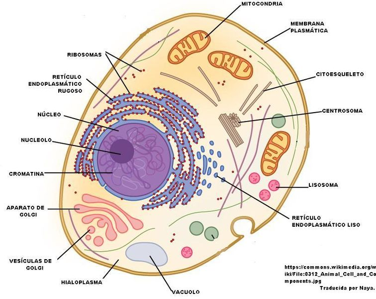

La celula

La célula (del latín cellula, diminutivo de cella, celda) es la unidad morfológica y funcional de todo ser vivo. De hecho, la célula es el elemento de menor tamaño que puede considerarse vivo. De este modo, puede clasificarse a los organismos vivos según el número de células que posean: si solo tienen una, se les denomina unicelulares (como pueden ser los protozoos o las bacterias, organismos microscópicos); si poseen más, se les llama pluricelulares. En estos últimos el número de células es variable: de unos pocos cientos, como en algunos nematodos, a cientos de billones (1014), como en el caso del ser humano. Las células suelen poseer un tamaño de 10 µm y una masa de 1 ng, si bien existen células mucho mayores.
La teoría celular, propuesta en 1838 para los vegetales y en 1839 para los animales, por Matthias Jakob Schleiden y Theodor Schwann, postula que todos los organismos están compuestos por células, y que todas las células derivan de otras precedentes. De este modo, todas las funciones vitales emanan de la maquinaria celular y de la interacción entre células adyacentes; además, la tenencia de la información genética, base de la herencia, en su ADN permite la transmisión de aquella de generación en generación.
Caracteristicas
Las células, como sistemas termodinámicos complejos, poseen una serie de elementos estructurales y funcionales comunes que posibilitan su supervivencia; no obstante, los distintos tipos celulares presentan modificaciones de estas características comunes que permiten su especialización funcional y, por ello, la ganancia de complejidad. De este modo, las células permanecen altamente organizadas a costa de incrementar la entropía del entorno, uno de los requisitos de la vida.
Caracteristicas estructurales:
-
Individualidad: Todas las células están rodeadas de una envoltura (que puede ser una bicapa lipídica desnuda, en células animales; una pared de polisacárido, en hongos y vegetales; una membrana externa y otros elementos que definen una pared compleja, en bacterias Gram negativas; una pared de peptidoglicano, en bacterias Gram positivas; o una pared de variada composición, en arqueas) que las separa y comunica con el exterior, que controla los movimientos celulares y que mantiene el potencial de membrana.
-
Contienen un medio interno acuoso, el citosol, que forma la mayor parte del volumen celular y en el que están inmersos los orgánulos celulares.
-
Poseen material genético en forma de ADN, el material hereditario de los genes, que contiene las instrucciones para el funcionamiento celular, así como ARN, a fin de que el primero se exprese.
-
Tienen enzimas y otras proteínas, que sustentan, junto con otras biomoléculas, un metabolismo activo.
Caracteristicas funcionales:
-
Nutrición. Las células toman sustancias del medio, las transforman de una forma a otra, liberan energía y eliminan productos de desecho, mediante el metabolismo.
-
Crecimiento y multiplicación. Las células son capaces de dirigir su propia síntesis. A consecuencia de los procesos nutricionales, una célula crece y se divide, formando dos células, en una célula idéntica a la célula original, mediante la división celular.
-
Diferenciación. Muchas células pueden sufrir cambios de forma o función en un proceso llamado diferenciación celular. Cuando una célula se diferencia, se forman algunas sustancias o estructuras que no estaban previamente formadas y otras que lo estaban dejan de formarse. La diferenciación es a menudo parte del ciclo celular en que las células forman estructuras especializadas relacionadas con la reproducción, la dispersión o la supervivencia.
-
Señalización. Las células responden a estímulos químicos y físicos tanto del medio externo como de su interior y, en el caso de células móviles, hacia determinados estímulos ambientales o en dirección opuesta mediante un proceso que se denomina quimiotaxis. Además, frecuentemente las células pueden interaccionar o comunicar con otras células, generalmente por medio de señales o mensajeros químicos, como hormonas, neurotransmisores, factores de crecimiento... en seres pluricelulares en complicados procesos de comunicación celular y transducción de señales.
-
Evolución. A diferencia de las estructuras inanimadas, los organismos unicelulares y pluricelulares evolucionan. Esto significa que hay cambios hereditarios (que ocurren a baja frecuencia en todas las células de modo regular) que pueden influir en la adaptación global de la célula o del organismo superior de modo positivo o negativo. El resultado de la evolución es la selección de aquellos organismos mejor adaptados a vivir en un medio particular.
| Caracteristica Comparativa | Procariota | Eucariota |
| Estructura | Simple, sin nucleo celular diferenciado, es decir su ADN esta disperso en el citoplasma. | Mas compleja, tienen su material hereditario fundamental encerrado en una envoltura nuclear. |
| Numero de Celulas | Son Unicelulares, es decir poseen una sola celula. | Son en su mayoria pluricelulares, es decir poseen mas de una celula. |
| Origen | Data de 3500 millones de años. Creyendose que fueron las primeras celulas vivas. | Hace 1500 millones de años. Se origino de los cambios que realizo la celula procariota. |
| Caracteristicas Secundarias |
-
Pueden sobrevivir a temperaturas extremas.
-
Pueden tener ser autotrofos o heterotrofos.
|
-
Poseen cito esqueleto muy estructurado.
-
Pueden tener pared celular o recubrimiento externo de protoplasma.
|